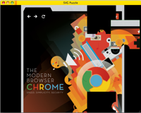

Except as otherwise noted, the content of this page is licensed under the Creative Commons Attribution 3.0 License, and code samples are licensed under the BSD License.
©2011 Google
What are extensions?Extensions are small software programs that can modify and enhance the functionality of the Chrome browser. You write them using web technologies such as HTML, JavaScript, and CSS. You can also use the extension system to build packaged apps, a downloadable kind of installable web app. From a user's point of view, extensions and packaged apps are very different because they present very different user interfaces. Extensions have little to no user interface. For example, the image to the right shows the icon that provides the UI for the Gmail extension.  Packaged apps, on the other hand, look and feel like regular web apps, with a big-screen design and rich UI. The image to the right shows a jigsaw puzzle game implemented by a packaged app. Both extensions and packaged apps bundle all their files into a single file that the user downloads and installs. This bundling means that, unlike ordinary web apps, extensions and packaged apps don't need to depend on content from the web. You can distribute your extension or packaged app by using the Chrome Developer Dashboard to publish to the Chrome Web Store. For more information, see the store developer documentation. |
How do I start?
Featured videos
Technical videos
|